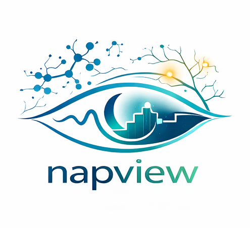

NAPVIEW v0.1.0 - autoscoring visualizer for real-time sleep experiments
https://github.com/paulzerr/napview_betaNAPVIEW is a real-time sleep stage classification visualizer for sleep experiments. It connects to live EEG data, runs automated sleep stage classification using powerful machine learning tools, and displays stage probabilities and signal features. NAPVIEW runs independently of existing lab setups and is intended to make the lives of researcher easier during live monitoring at night. At present NAPVIEW directly supports BrainVision and OpenBCI EEG hardware, but any EEG system that allows real-time signal streaming can be connected through a labstreaminglayer (LSL) connector.
Download >> NAPVIEW for Windows 10/11 <<
Installation
Option 1: Standalone Windows build
For restricted Windows environments without admin rights, use the standalone build:
Option 2: Install from source
Python 3.11 is recommended.
git clone https://github.com/paulzerr/napview_beta.git
cd napview_beta
python -m venv napview_venv
napview_venv\Scripts\activate
pip install -r requirements.txtMac/Linux:
git clone https://github.com/paulzerr/napview_beta.git
cd napview_beta
python3 -m venv napview_venv
source napview_venv/bin/activate
pip install -r requirements.txtLaunch NAPVIEW:
python run_napview.pyNote: on first run, NAPVIEW may download model weights via the NIDRA backend.
Graphical user interface (GUI)
NAPVIEW launches a local control panel in your browser and opens a second tab for the live visualizer. The default control URL is http://127.0.0.1:8145 (NAPVIEW will pick the next free port if needed).
GUI Walkthrough
Step 1: Start NAPVIEW
Run python run_napview.py. A browser window opens with the control panel.
Step 2: Set data directory and record name
Use the Data directory selector to choose where session files and outputs are stored. The default location is your user data directory under napview/data.
Step 3: Select data source
- Playback recording (Simulator): select a local EDF file to simulate a live stream. The file is copied into the session data directory.
- BrainVision: enter the acquisition PC IP and RDA port.
- OpenBCI: choose a board type and port (if required). Use Synthetic to test without hardware.
- Custom LSL stream: provide the LSL stream name (default in config is
napview_EEG_stream). - Zmax: currently not implemented.
Step 4: Select the sleep staging model
Choose the sleep staging model (currently U-Sleep via the NIDRA backend).
Step 5: Optional settings
- Analysis parameters: adjust epoch length.
- Channel configuration: connect to the stream and select channels for staging.
Step 6: Start streaming
Click START napview. A new tab opens with the real-time visualizer (typically at http://127.0.0.1:8245). Sleep stage probabilities stabilize after several minutes of data.
Step 7: Shutdown and save
Click SHUTDOWN and save to stop the session and write outputs.
Preparing your data
- NAPVIEW expects a continuous EEG stream with channel names available from the stream metadata.
- Use the Simulator to test with a static EDF file.
- For custom LSL streams, make sure the stream type is EEG and the name matches the value in the GUI.
- BrainVision requires the RDA plugin and the IP address of the acquisition PC.
- OpenBCI users should select the correct board type and port.
Model validation and performance
NAPVIEW uses the NIDRA backend for real-time scoring. The default staging model is U-Sleep, which has been validated in large multi-center datasets. For detailed performance metrics, refer to the original U-Sleep publication:
U-Sleep: resilient high-frequency sleep staging (Perslev et al., 2021)
Understanding your results
NAPVIEW writes session data to your user data directory (default: napview/data), and saves final outputs under napview/data/output/<timestamp> when you shut down.
| Output | Description |
|---|---|
recording_<timestamp>.edf | Recorded EEG data saved on shutdown. |
staging_results_<timestamp>.txt | Sleep staging results from the live session. |
napview_log.log | Session logs (or per-session logs if enabled). |
temp/db/eeg_data.db | SQLite database with raw stream samples. |
temp/db/results_data.db | SQLite database with staging and bandpower results. |
Live visualization includes sleep stage probability traces and band power (delta, theta, alpha, beta, gamma). Values update every epoch.
Python endpoints
NAPVIEW is designed as a local application. To launch programmatically, call the backend entrypoint:
from napview.napview_backend import main
main()The recommended way to run locally is:
python run_napview.pyFAQ & troubleshooting
GUI issues
Q: The GUI did not open.
A: Check the terminal output for errors and make sure the port (starting at 8145) is not blocked.
Q: The visualizer tab is empty.
A: This usually means the data stream has not started or there is no incoming data. Confirm the data source and check the status panel for red warnings.
Streaming issues
Q: Custom LSL stream not found.
A: Ensure the stream is running, the stream name matches exactly, and the stream type is EEG.
Q: BrainVision does not connect.
A: Verify the RDA plugin is enabled and the IP/port are correct.
General
Q: Zmax option does not work.
A: Zmax is listed in the GUI but not implemented yet.
How to cite NAPVIEW
If you use NAPVIEW in your research, please cite the NAPVIEW repository and the underlying models.
1. Citing NAPVIEW
Zerr, P. (2025). napview: real-time sleep scoring and analysis visualizer. GitHub. https://github.com/paulzerr/napview_beta
2. Citing U-Sleep
Perslev, M., et al. (2021). U-Sleep: resilient high-frequency sleep staging. NPJ Digital Medicine.
3. Citing YASA (bandpower and staging utilities)
Vallat, R., & Walker, M. P. (2021). An open-source, high-performance tool for automated sleep staging. eLife, 10. doi: 10.7554/eLife.70092
Attribution
NAPVIEW uses the NIDRA backend for sleep staging and integrates U-Sleep for model inference. Bandpower utilities are based on the YASA implementation.
License
This project is released under the BSD-3 Clause License.
Contact
For questions, bug reports, or feedback, please contact Paul Zerr at paul.zerr@donders.ru.nl.